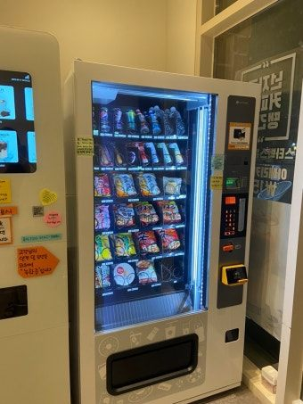
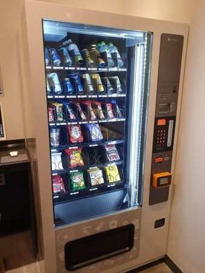
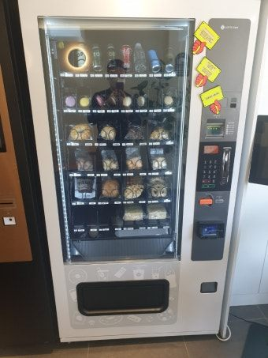

무인자판기 설치·임대·렌탈 선택 방법 — 무인사업 시작 가이드

"퇴근 후에도 돈이 벌리는 무인사업, 나도 해볼까?" 요즘 이런 상담 전화를 정말 많이 받습니다. 인건비는 계속 오르고, 직원 구하기는 어렵고, 그래서 직원 없이 24시간 돌아가는 무인매장·무인자판기에 관심 갖는 사장님이 부쩍 늘었습니다. 설치를 다니는 입장에서, 처음 시작하시는 분들이 꼭 알아야 할 것들을 순서대로 정리해 드리겠습니다. 광고보다는 현장에서 실제로 겪은 이야기 위주로 적었습니다.
1. 구매 · 임대 · 렌탈, 뭐가 다른가요?
제일 많이 물어보시는 게 이겁니다. 무인자판기와 무인키오스크는 세 가지 방식으로 들일 수 있습니다.
① 구매 — 기계를 한 번에 사서 내 자산으로 만드는 방식입니다. 초기 비용은 크지만 매달 나가는 돈이 없어 오래 운영할수록 이득입니다. 자리와 아이템에 확신이 있고, 여러 대로 늘릴 계획이면 구매가 유리합니다.
② 임대 — 기계 값을 매달 나눠 내는 방식입니다. 목돈 없이 시작할 수 있고, 계약 기간이 끝나면 보통 내 것이 됩니다. "일단 한 대로 해보고 싶은데 목돈은 부담된다" 하는 첫 창업자에게 잘 맞습니다.
③ 렌탈(대여) — 매달 이용료만 내고 빌려 쓰는 방식입니다. 고장·점검을 업체가 맡아주는 경우가 많아 관리가 편하고, 안 되면 부담 없이 접을 수 있는 게 장점입니다. 리스크를 최소로 하고 싶거나, 자리 테스트를 먼저 해보고 싶을 때 좋습니다.
정리하면 — 목돈 있고 길게 갈 거면 구매, 목돈은 없지만 내 것으로 만들고 싶으면 임대, 리스크를 줄이고 가볍게 시작하려면 렌탈입니다. 정답은 없고 사장님 상황에 맞추면 됩니다. H포스는 세 방식을 다 진행하니, 자리와 아이템을 보고 어떤 방식이 이득인지 계산해서 알려 드립니다.

2. 요즘은 어떤 아이템으로 시작할까요?
몇 년 전만 해도 무인이라 하면 커피·음료 자판기가 전부였습니다. 지금은 무인키오스크 한 대로 웬만한 매장을 다 무인으로 돌립니다. 요즘 실제로 문의가 많은 아이템을 꼽아 보면 이렇습니다.
• 무인아이스크림·무인편의점 — 초기 무인창업의 스테디셀러입니다. 관리가 단순하고 동네 상권이면 꾸준합니다.
• 무인정육점 — 요즘 가장 빠르게 느는 업종입니다. 셀프 계량·결제 키오스크로 24시간 고기를 팝니다.
• 무인카페·무인밀키트·무인마카롱 — 소자본으로 카페·반찬 상권을 노리는 분들이 많이 찾습니다.
• 멀티자판기 — 음료·커피·스낵·아이스크림·냉동을 한 대에 담아, 좁은 자리에서 여러 품목을 동시에 파는 방식입니다.
• 골프존·스크린골프, 병원 무인접수 — 매장이 아니라 기존 사업장에 무인 접수·결제 키오스크만 얹는 것도 요즘 흐름입니다.
공통점은 하나입니다. 사람 손이 덜 가는 아이템이 오래갑니다. 유통기한 관리가 빡센 신선식품일수록 손이 많이 가니, 처음엔 관리가 단순한 것부터 시작하시길 권합니다.
3. 시작 전에 이것부터 — 입지가 8할입니다
설치를 다녀 보면 기계보다 자리가 매출을 정합니다. 아무리 좋은 기계도 사람이 안 지나가는 자리에 놓으면 안 팔립니다. 반대로 목만 좋으면 평범한 기계도 잘 됩니다. 그래서 저희는 설치 전에 입지부터 봅니다.
좋은 자리의 조건은 ① 사람이 꾸준히 지나가고 ② 멈춰 설 공간이 있고 ③ 밤에도 밝고 ④ 근처에 경쟁(편의점 등)이 겹치지 않는 곳입니다. 학교·학원가, 지하철역·역세권, 관공서·구청, 아파트 단지, 오피스, 헬스장·스터디카페, 호텔·모텔·사우나·찜질방, 애견셀프목욕 같은 사람이 오래 머무는 곳이 특히 회전이 빠릅니다. 참고로 관공서·학교는 무인자판기를 자동판매기라고 부르며 입찰로 진행하니, 그 방식도 함께 도와드립니다.

4. 이렇게 시작하시면 됩니다 (준비 순서)
1단계 · 아이템과 자리 정하기 — 무엇을, 어디에 놓을지 정합니다. 자리가 이미 있으면 그 자리에 맞는 아이템을, 아이템이 정해졌으면 그에 맞는 자리를 찾습니다. 이 단계는 무료로 함께 상담해 드립니다.
2단계 · 방식 정하기(구매·임대·렌탈) — 예산과 리스크를 보고 세 방식 중 고릅니다. 처음이라 부담되면 렌탈이나 임대로 한 대 시작해 감을 잡고 늘리는 걸 권합니다.
3단계 · 설치와 결제 연동 — 기계 반입, 전기·통신 연결, 카드·삼성페이·카카오페이·네이버페이·QR 결제 세팅까지 설치비 무료로 진행합니다. 보통 신청 후 평균 4일 이내 방문합니다.
4단계 · 운영과 관리 — 매출·재고는 앱으로 원격 확인합니다. 매일 안 나가도 되고, 직접 채우기 어려우면 위탁운영도 가능합니다. 잘 나가는 품목에 슬롯을 몰아주고 재고를 끊기지 않게 유지하는 것, 이게 매출의 거의 전부입니다.
5. 무인사업, 솔직하게 좋은 점과 주의할 점
좋은 점 — 인건비 0원으로 24시간 운영되고, 부업·투잡으로 부수입을 만들기 좋습니다. 자투리 공간 한 칸이면 시작되고, 현금함이 없어 정산도 간단합니다.
주의할 점 — 무인은 "설치하면 알아서 벌린다"가 아닙니다. 입지가 안 맞으면 안 팔리고, 재고·유통기한 관리를 미루면 매출이 바로 빠집니다. 그래서 저희는 안 될 자리는 안 된다고 먼저 말씀드립니다. 그게 서로한테 이득이니까요.
무인사업, 어디서부터 할지 모르겠다면
"관심은 있는데 뭐부터 해야 할지 모르겠다" 하시면 편하게 전화 주세요. 무인자판기·무인키오스크 구매·임대·렌탈 상담부터 자리 분석, 아이템 추천, 설치비용과 예상 수익까지 무료로 알려 드립니다. 전국 어디든 방문합니다.
📞 무인사업 시작 상담 010-6832-1994